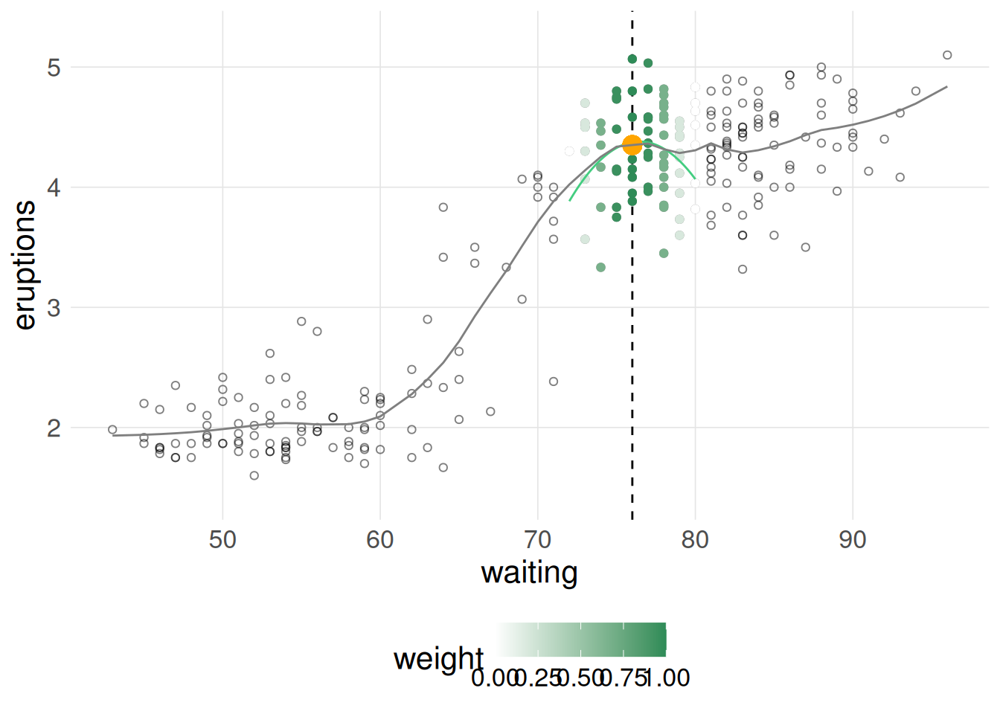

Show the code
data('faithful')
loess_vis(formula = eruptions ~ waiting,
data = faithful)
LOESS (locally estimated scatterplot smoothing) provides a method for visualizing the relationship between variables when classical linear and non-linear least squares regression may not be the most appropriate. The non-parametric technique explores the relationship between variables using local regressions using only regions of the explanatory variable (IV).
This shiny app permits visualization of those local regressions along the whole of the X variable space. The way that the loess curve is calculated is to use the predicted value in the response dimension (DV) for the chosen X value based on the local regression. These predicted points are visualized with the orange dot on the plot and the curve can be seen to be “drawn” when using animation of the centering slider.
The ‘loess’ function in R provides the capability for either first or second degree polynomial specification for the loess fit (linear or quadratic) and this shiny app provides that same choice along with the “span” specification which affects the smoothing outcome. Center and span work by locating the local regressions and determining the X axis range employed.
The loess algorithm uses in R and in this shiny app follow an approach developed by Cleveland (1979) and which was apparently also in use in some fields as the Savitsky-Golay filter (Savitzky and Golay 1964). It weights data points closer to the center of the localized regression more heavily than those more distanced.
This app does not permit choice of smoothing family. It uses the default Gaussian kernel (least squares approach) of the loess function in R.
The weights for each x are calculated using:
\[\left( 1 - \left(\frac{dist}{max(dist)}\right)^3 \right)^3\]
when \(\alpha < 1\) (i.e. span).
Visualization of Loess regression. This app is a visual/conceptual demonstration of the elements of a Loess Plot.The orange point plots the predicted value from an X axis value midway along a local regression shown by the local (green) regression fit. The center of this locally weighted regression and its X axis span can be controlled by the CENTER slider and SPAN numeric entry box. Best use of the app would use the animation control for the CENTER slider and the checkbox for actively drawing the Loess fit. The full loess fit can also be displayed with the second checkbox. The local regression can be specifed as a linear or quadratic fit with the DEGREE dropdown.